Стражи белгородских степей
Эти зверьки очень похожи на плюшевых мишек. Их пронзительный свист часто служит сигналом опасности и разносится эхом по оврагам и балкам. Знакомьтесь – степной сурок, он же байбак, самый крупный представитель семейства беличьих.

Кто такой сурок?
Сурки – наземные, приспособленные к норному образу жизни животные. Норный образ жизни и роющая деятельность обусловили адаптивные черты поведения и морфологии зверьков, соответствующие конкретным условиям обитания. Селятся семейными колониями, состоящими из 7 и более особей. Среди ценных промысловых зверей сурок всегда занимал важное место. Использование его шкурки, жира и мяса практиковалось издавна.
 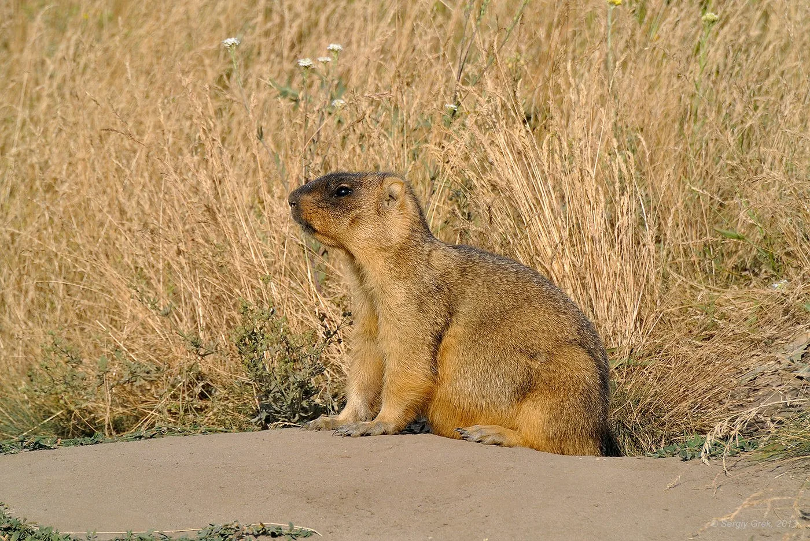
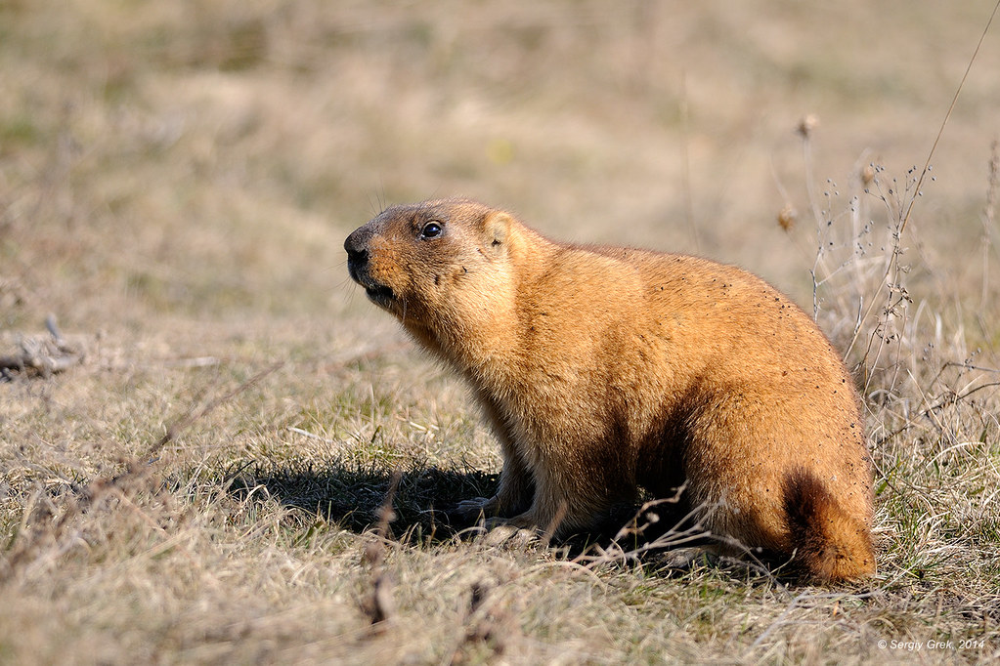
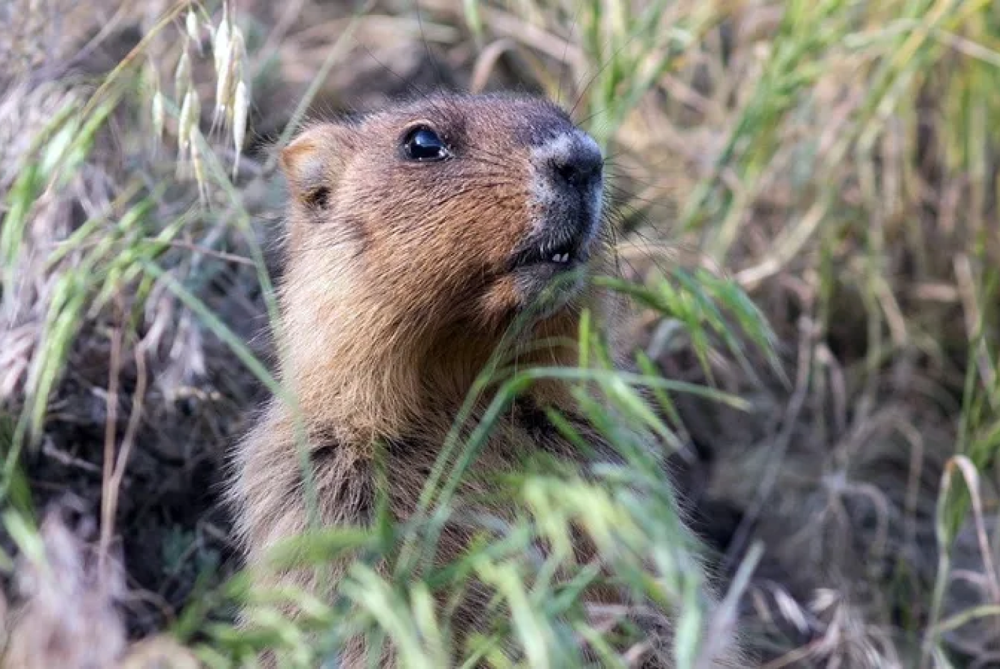
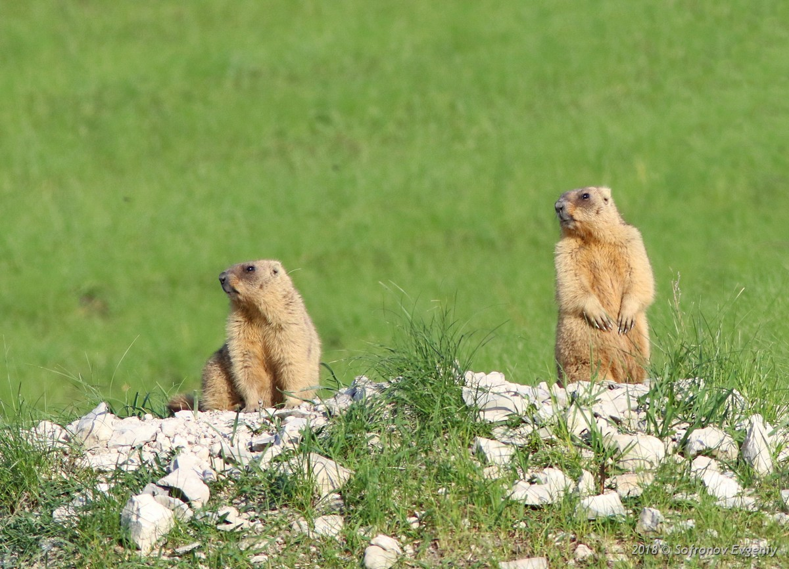
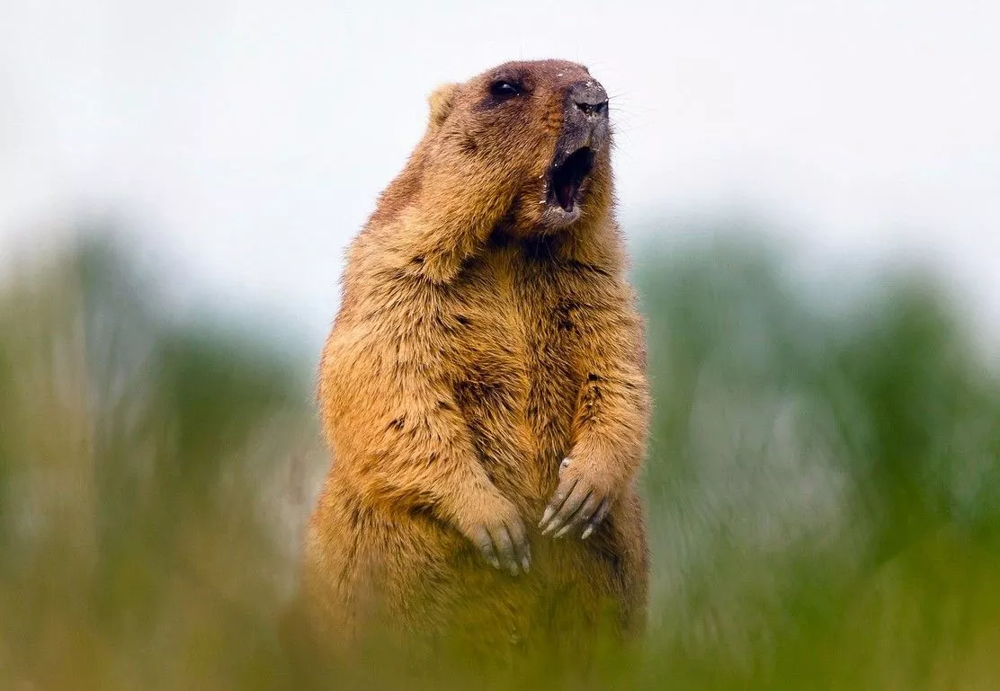
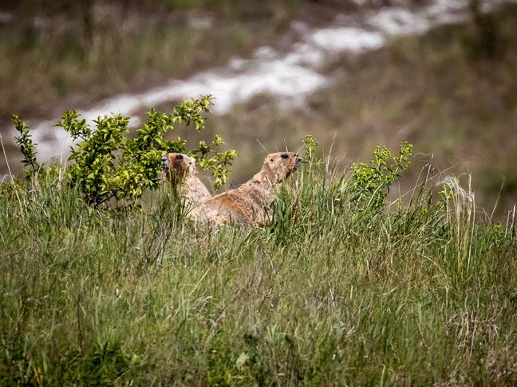
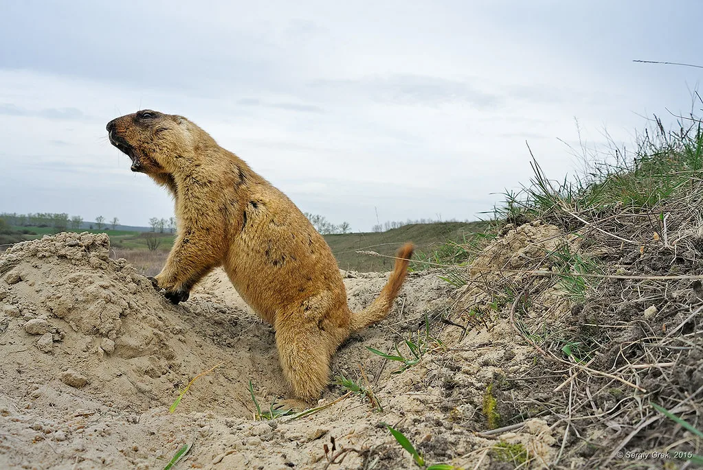
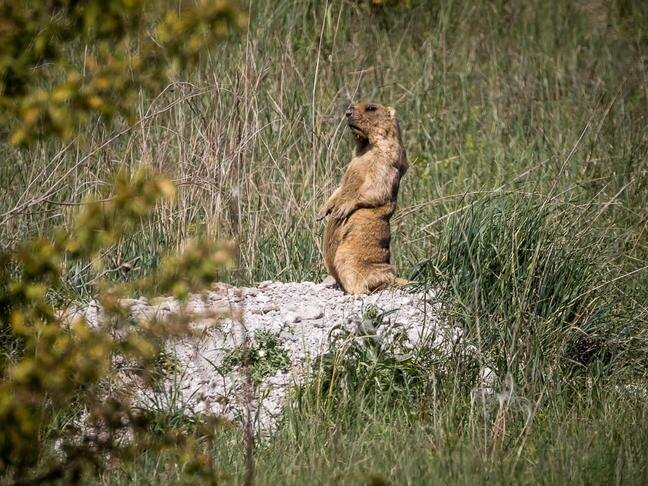
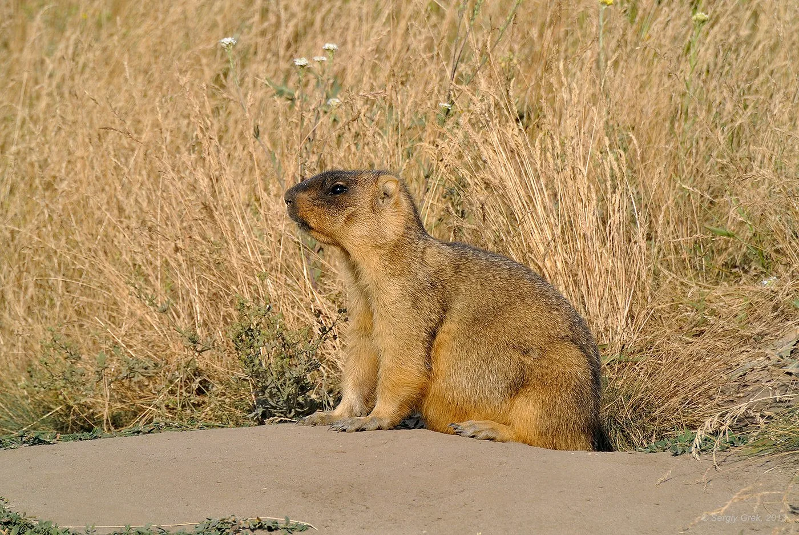
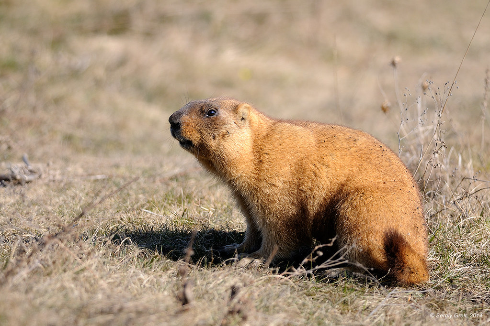
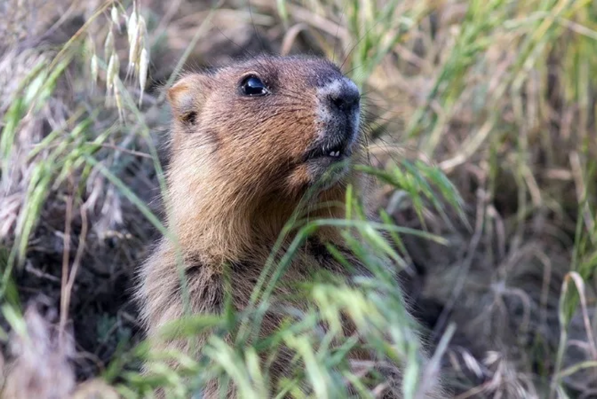
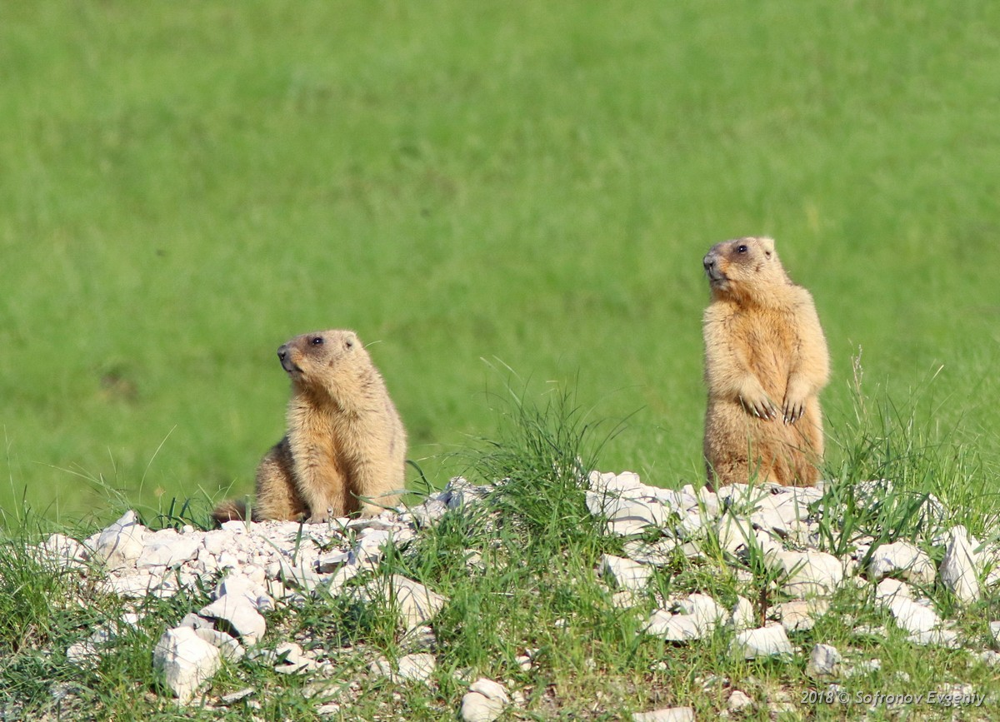
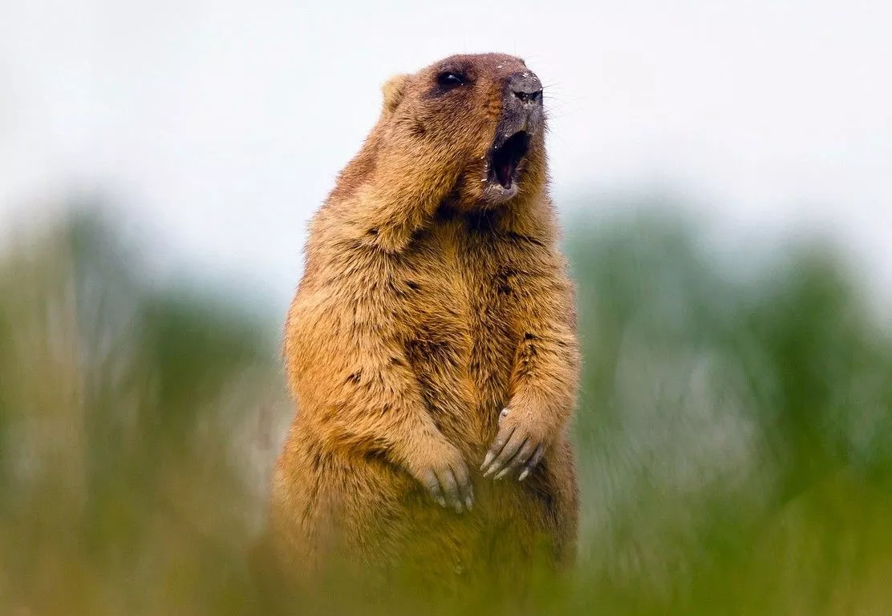
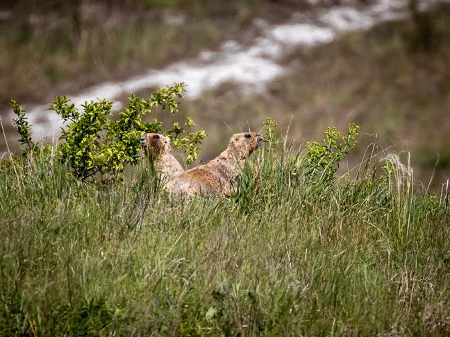
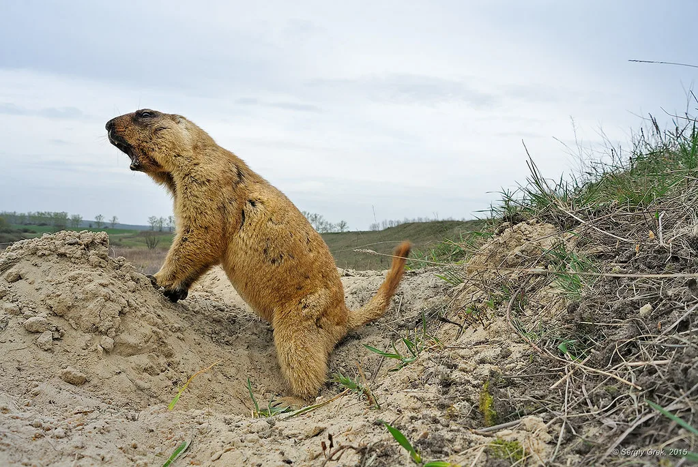
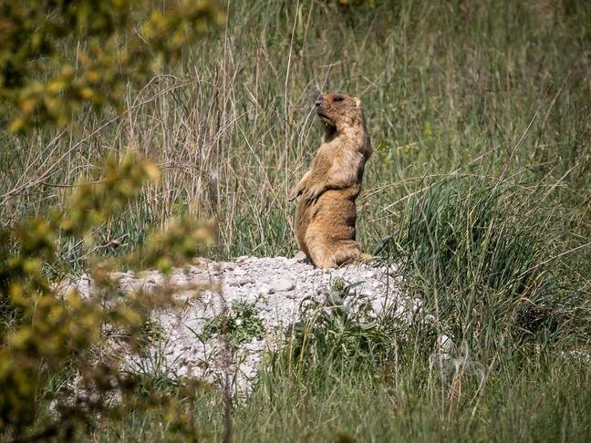
Места обитания
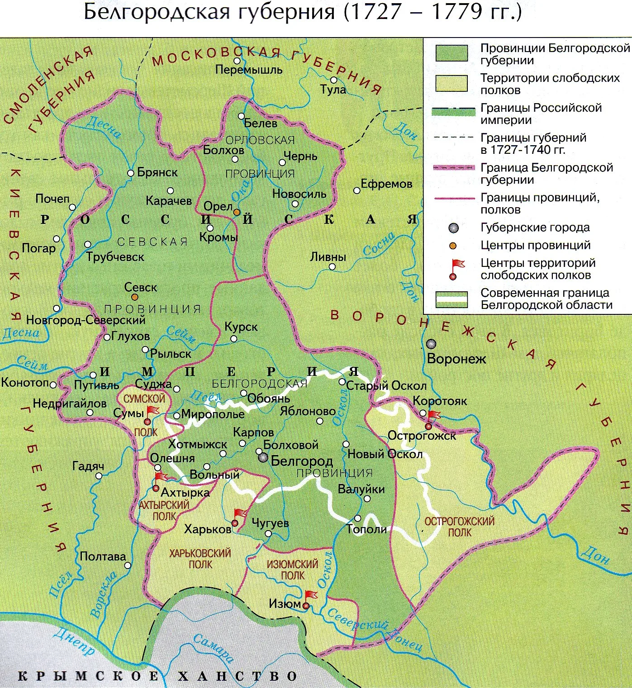В XVIII – XIX веках европейский байбак широко населял открытые ландшафты территории современной Белгородской области. К началу 80-х годов XX века устойчивые очаги обитания сурка-байбака остались лишь в двух из 21 района области (Волоконовском и Валуйском). В настоящее время он обитает в 18 из 21 административных районов области. Распространение сурка-байбака приурочено к сохранившимся степным участкам и антропогенным ландшафтам. Места обитания часто связаны с непригодными для сельскохозяйственного использования землями. Также отмечается рост поселений балочного типа. Основные экологические факторы, определяющие размещение сурков, — обеспеченность сочной свежей растительностью, наличие достаточного слоя мелко-землистого грунта и залежей мела, а также возможность зрительно-звуковой связи между отдельными зверьками семьи и колонии. Второстепенные факторы, влияющие на пространственное распределение зверьков, — это расчлененность рельефа, погодные условия конкретного года, распределение снежного покрова.
Образ жизни
Все входы в нору байбаки забивают плотными пробками из смеси земли и камней и впадают в глубокую спячку, которая длится 6–8 месяцев. Температура воздуха в норе даже в сильные морозы не опускается ниже 0 °C.
В летний период байбаки поедают молодые ростки злаков и разнотравья, а также цветы. Во второй половине лета, когда степная растительность выгорает, они всё дальше отходят от своих нор в поисках влажных участков с сочной травой. К концу лета сурок накапливает до 800–1200 г жира, что составляет до 20–25% его веса. Зверьки всё реже покидают норы, они обновляют гнёзда, натаскивая в них сухую траву.